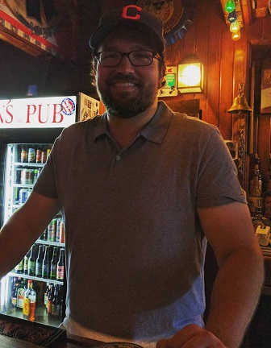

About Me
Welcome to my portfolio page, created for a full-stack web development bootcamp course I'm taking. I've been working in IT focusing purely on database technology for the past decade and wanted to learn some new skills. I'm currently in a DBA role, but I also have experience with database development and data warehouse development.
Some other things about me... I've been in the Cleveland area my entire life... I've ridden across this great state twice on my bike, traveling from Cincinnati to Cleveland on the Pan Ohio Hope Ride... I enjoy beer & baseball (although I'm bummed about how our last season ended)... and I'm a pretty good bowler. There you go, enjoy the site!
Connect with Me